An Eddie is one token
A primitive of the robot's skill vocabulary bound to a task frame, a closed-loop model identified from rollouts, and a conformal envelope on that model's error. The envelope is part of the Eddie.
Action tokens with certificates
Dynamical Action Tokens
with Certified Composition
Action tokens that carry the dynamics of the robot that runs them.
Stacking under perturbation. The cube is pushed with a stick; the arm re-targets, holds in a certified stop while the cube is outside the safe set, then stacks it.
Full clipHumanoid manipulation. A Unitree G1 with Dex3 hands opens a drawer and transfers a caddy through an Eddie stream of 16 Eddies.
Full clipDexterous manipulation. A UR5e with a LEAP hand turns a wheel through six Eddies, each gated by its own envelope.
Full clipClips play muted at normal speed with the gate active; overlays name the running Eddie. More demonstrations below .
10tasks
4 robots · 2 engines + a real Franka
MuJoCo, Isaac Sim and a Franka Panda
5/ 2,000
Tubes violated on held-out episodes
Calibration fixed, all ten tasks
98%
Runs finished at 5 cm by the self-calibrating gate
1,955 of 2,000 test runs
Reported in the paper · Evaluation details below
01 / The idea
A token is just a symbol. An Eddie is a symbol that also says how this robot will track it, and how sure we are of that.
Robot foundation models act through action tokens, but a token is just a symbol, it says nothing about how well the robot will track it. We introduce Eddies (Embedding-space Discrete Dynamical Instructions with Envelopes), action tokens that carry the dynamics of the robot. An Eddie is a primitive from the robot's skill vocabulary bound to a task frame, a closed-loop model identified from rollouts, and a conformal envelope on that model's error. Eddies chain through hand-overs into a whole-task tracking certificate, and each Eddie gates its own commands. Before every command it checks that the robot stays within its tolerance, and then it calibrates itself in closed loop with a guaranteed long-run miss rate.
We test Eddies on ten tasks and four robots in two physics engines and on a real Franka. The certificates hold on held-out episodes. Eddies certify more tightly than global models, per-primitive models and learned tokenizers of equal size. A skill's certificate can also change with the robot that runs it.
Read the full paper02 / The method
Streamer chains certified Eddies into an Eddie stream; every Eddie checks its own commands and calibrates itself as it runs.
A primitive of the robot's skill vocabulary bound to a task frame, a closed-loop model identified from rollouts, and a conformal envelope on that model's error. The envelope is part of the Eddie.
Streamer chains Eddies through hand-overs. Inside an Eddie the error follows its tube; at a hand-over it jumps by the gap between the two equilibria. Chained, the tubes bound the tracking error over the whole stream.
Before every command the running Eddie predicts the next error with its own model and envelope. If the prediction stays within tolerance the command is sent; otherwise the robot holds in a certified stop.
After each episode an adaptive conformal update moves the shared coverage level toward the target miss rate; at hand-overs the Eddie refits its model. Updated models and envelopes flow back into the library.
03 / The evidence
Paper-reported results on ten MuJoCo tasks with four robots, in Isaac Sim, and on a real Franka.
200 training, 200 calibration and 200 test episodes per task, α = 0.1. A certificate is violated if the measured hand position leaves its tube. Gates are replayed on the logged test episodes, so the outcome of every stopped run without the gate is known.
With the robot's reference model for every Eddie the tube is 1.5–7.6 times wider; a per-step envelope with a union bound certifies no plan at these tolerances.
| Franka | LEAP hand | Aero hand | G1 | |||||
|---|---|---|---|---|---|---|---|---|
| Tokens | tube | finished 5 / 7.5 cm | tube | finished 5 / 7.5 cm | tube | finished 5 / 7.5 cm | tube | finished 7.5 / 10 cm |
| Eddies | 4.3 | 275 / 359 | 11.9 | 174 / 174 | 6.5 | 164 / 340 | 7.9 | 172 / 362 |
| Eddies, one reference model | 18.4 | 0 / 0 | 17.6 | 0 / 0 | 10.5 | 0 / 0 | 60.1 | 172 / 172 |
| Eddies, per-step bound | – | 0 / 0 | – | 0 / 0 | 8.7 | 0 / 0 | – | 0 / 0 |
Runs finished at μ = 5 / 7.5 cm; the G1 uses 7.5 / 10 cm, since its balance control widens the tubes and no plan fits within 5 cm with any tokens. The two ablation rows replace each Eddie's model with the robot's reference model, and the episode-level envelope with a per-step bound. The paper also compares against learned tokenizers; those baselines are not part of this repository.
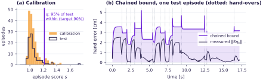
At 5 cm with the calibration fixed, checking every planned Eddie's tube before motion finishes 890 of 2,000 runs; checking only the next command 1,968; the self-calibrating gate 1,955 from the same calibration, and nearly every run on tasks that start with no calibration.
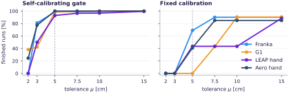
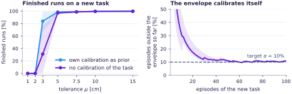
At 2 cm, 1,627 runs would leave μ and the look-ahead stops 97% of them before they do. With every Eddie 1.5–4 times faster, the fixed-calibration gate refuses every plan before motion.
Certificates are moved between the LEAP and Aero hands on the same UR5e arm, and from MuJoCo to Isaac Sim. Borrowed certificates are violated or too wide to finish most runs; re-identified ones are violated at most once and finish over 80% of runs.
| borrowed | re-identified | |||||
|---|---|---|---|---|---|---|
| Source → target | Task | episodes | viol. | finished | viol. | finished |
| LEAP → Aero | Wheel | 200 | 20 | 78 | 0 | 176 |
| Peg tightening | 200 | 5 | 0 | 0 | 164 | |
| Aero → LEAP | Wheel | 200 | 0 | 22 | 1 | 180 |
| Peg tightening | 200 | 0 | 0 | 0 | 174 | |
| MuJoCo → Isaac Sim | Staged insertion | 50 | 10 | 22 | 0 | 45 |
| Peg insertion | 50 | 5 | 19 | 0 | 46 | |
A certificate borrowed unchanged from the source, or re-identified on the target (for Isaac Sim: refit on the MuJoCo data plus 10 Isaac Sim episodes per task, calibrated on 50 more). Highlighted: the fewer violations and the more finished runs per task. Pulling a drawer open has a 3.0 cm tube on the Franka and 8.3 cm on the G1, while reaching for a peg stays at 2.9–4.9 cm on all four robots.
Figures and tables from the Eddies paper. Supplementary material
04 / Beyond simulation
50/50
Real runs that stack the cube, with no tube violation, under either certificate
Cube stacking with eight Eddies. 50 Hz Eddie commands are tracked by a 1 kHz compliant controller, both gates run online, and the MuJoCo certificate is carried over unchanged or re-identified on the robot.
| fixed-calibration gate | self-calibrating gate | |||||||
|---|---|---|---|---|---|---|---|---|
| System certificate | runs | success | viol. | tube p90 [cm] | fin. / stop. | caught | fin. / stop. | caught |
| MuJoCoMuJoCo | 100 | 99 | 0 | 4.3 | 89 / 11 | 298 / 298 | 96 / 4 | 287 / 298 |
| Isaac SimMuJoCo | 50 | 50 | 0 | 4.3 | 31 / 19 | 150 / 150 | 48 / 2 | 148 / 150 |
| Isaac Simre-identified | 50 | 50 | 0 | 4.0 | 41 / 9 | 150 / 150 | 48 / 2 | 147 / 150 |
| Real FrankaMuJoCo | 50 | 50 | 0 | 4.3 | 30 / 20 | 150 / 150 | 46 / 4 | 145 / 150 |
| Real Frankare-identified | 50 | 50 | 0 | 4.1 | 43 / 7 | 150 / 150 | 45 / 5 | 143 / 150 |
Both gates see the same runs from the certificate shown, replayed on the logs in simulation and online on the robot. Viol.: runs that leave a tube; fin. / stop.: runs without and with a certified stop; caught: runs at 2–4× speed refused or stopped before leaving μ, of those that would.
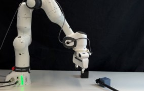
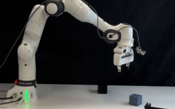
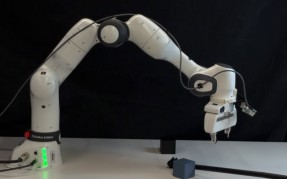
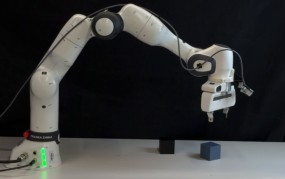
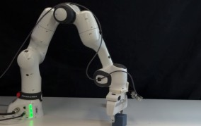
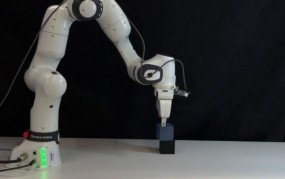
Frames (d)–(i) of the paper's Fig. 8. The stop is a refused command, certified by the Eddie's own model and envelope; the stream resumes the moment the check passes again. Full figure with the setup panels
Test episodes driven by Streamer through the task's Eddie stream, with the gate's decisions overlaid
Franka · peg insertionAn Eddie stream of 8 Eddies.
Full clipFranka · staged insertionThe longest stream, 16 Eddies: pick, stage, regrasp, insert at 1–2 mm clearance, push home.
Full clipFranka · cube stacking8 Eddies; the same stream runs in Isaac Sim and on the real robot.
Full clipFranka · drawer + boxDrawer opening with a box transfer, 14 Eddies.
Full clipG1 · peg insertionUnitree G1 with Dex3 hands, 8 Eddies; balance control widens the tubes.
Full clipG1 · drawer + caddyDrawer opening with a caddy transfer, 16 Eddies.
Full clipLEAP hand · wheelUR5e with a LEAP hand, 6 Eddies.
Full clipLEAP hand · peg tightening7 Eddies; its certificate differs from the Aero hand's for the same primitives.
Full clipAero hand · wheelUR5e with an Aero hand, 6 Eddies.
Full clipAero hand · peg tightening7 Eddies with the Aero's own certificate; Table 2 re-identifies the LEAP hand's on it.
Full clip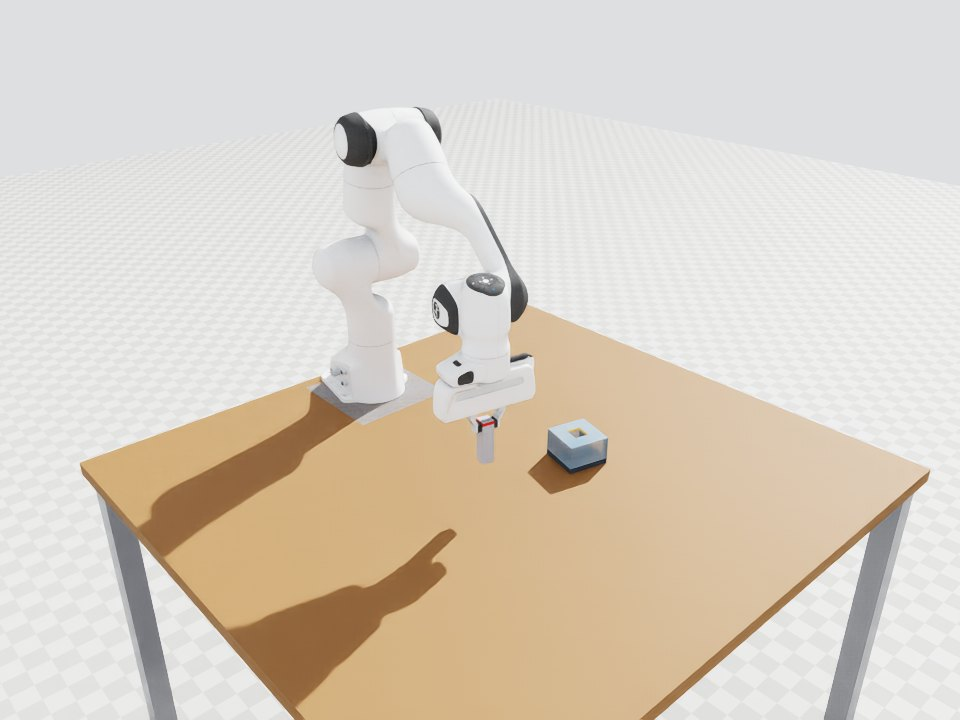
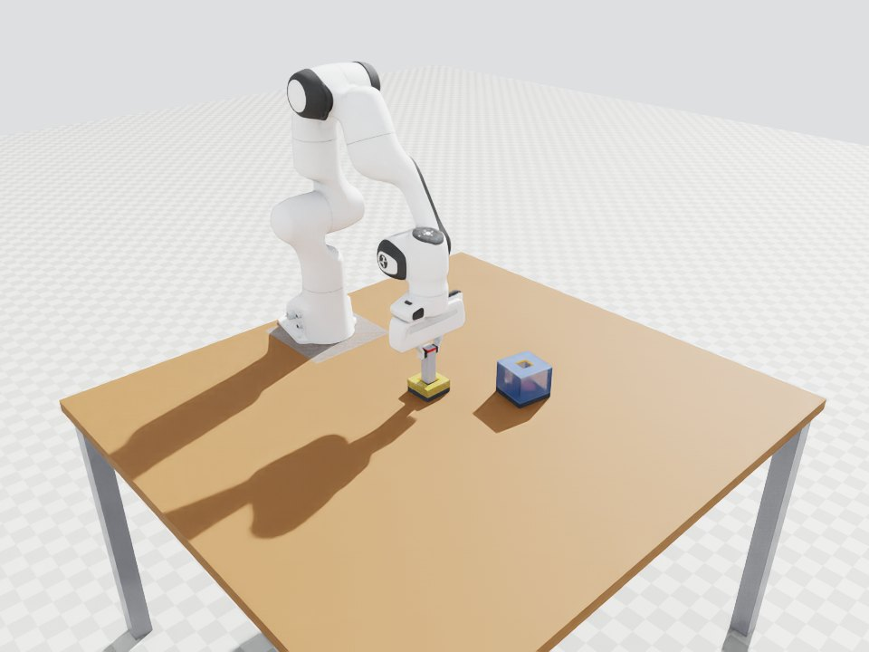
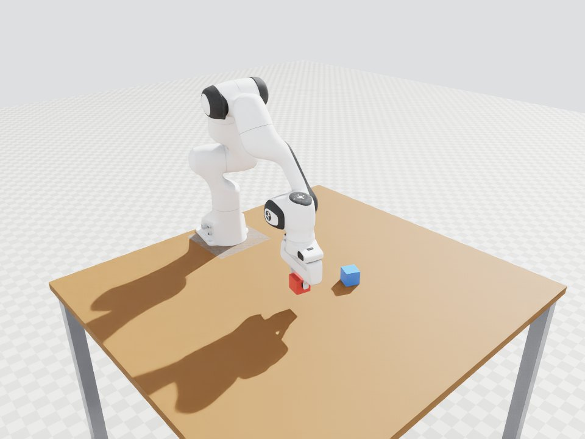
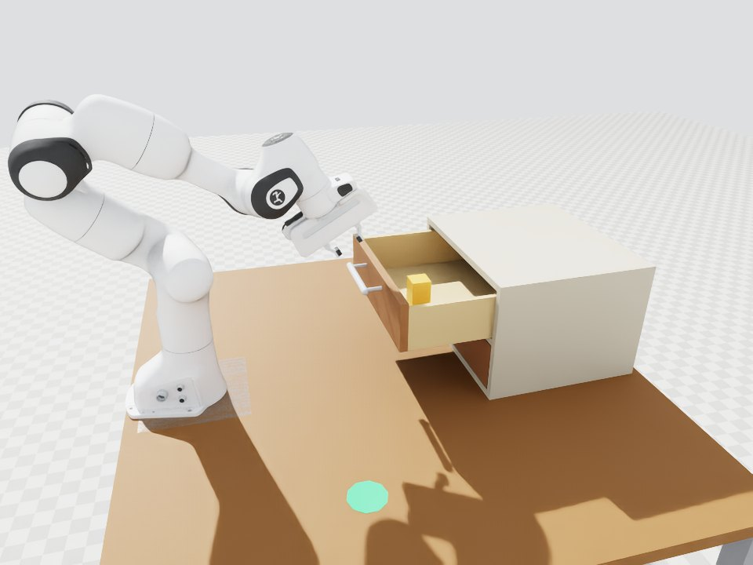
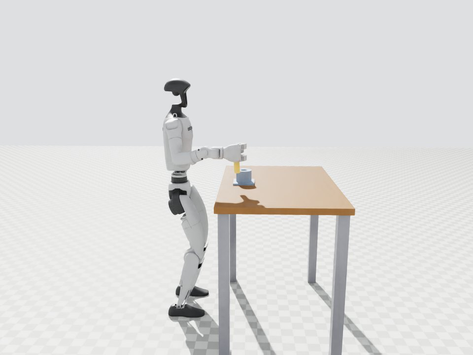
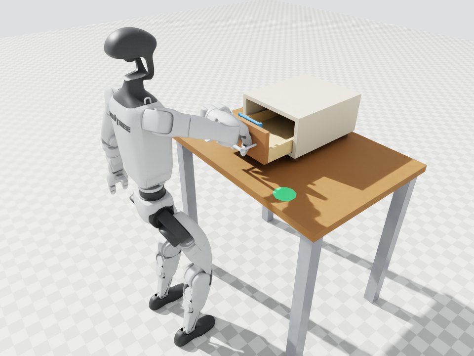
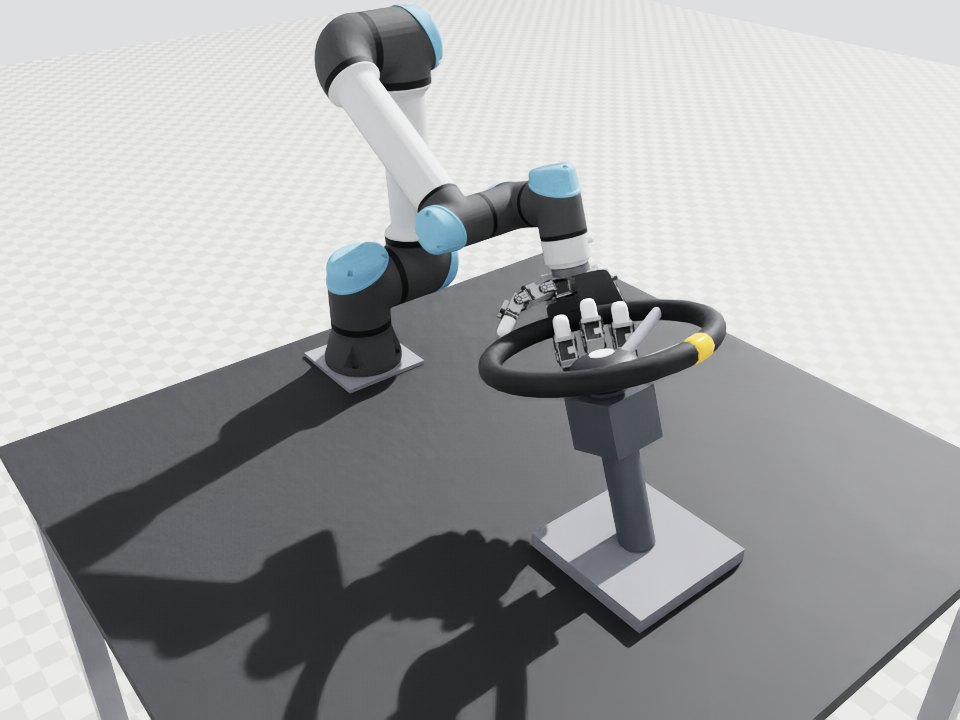
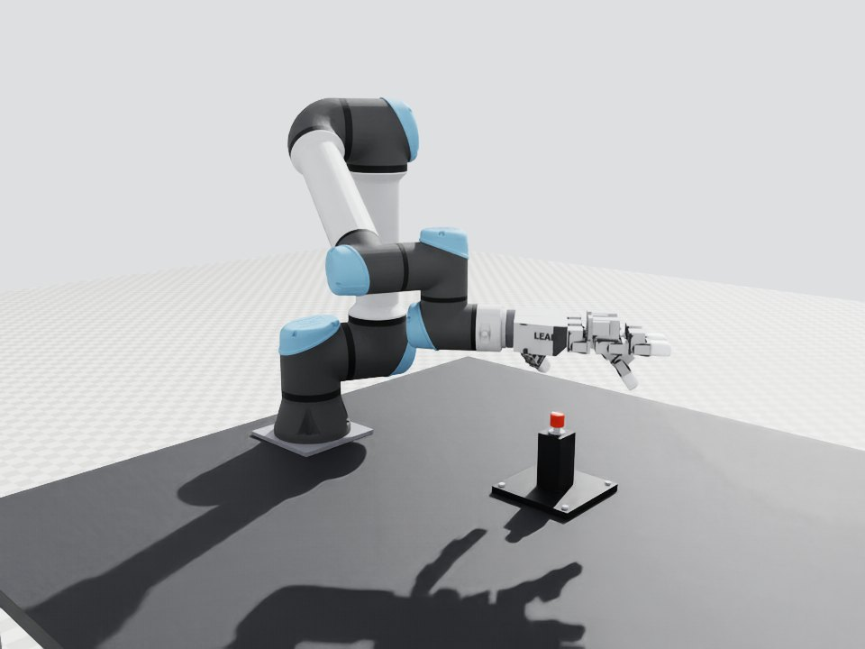
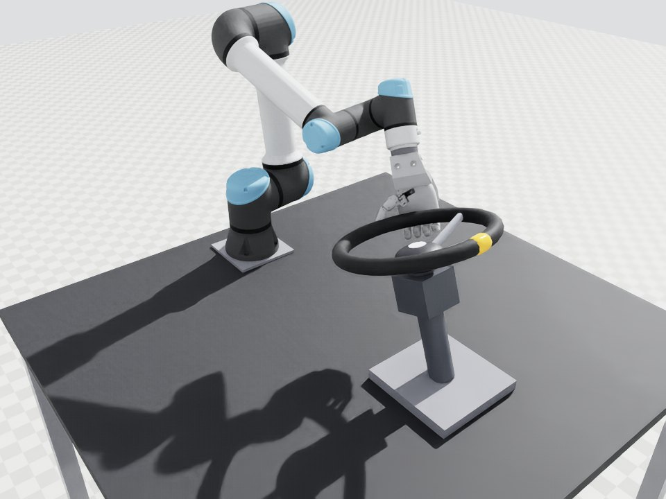
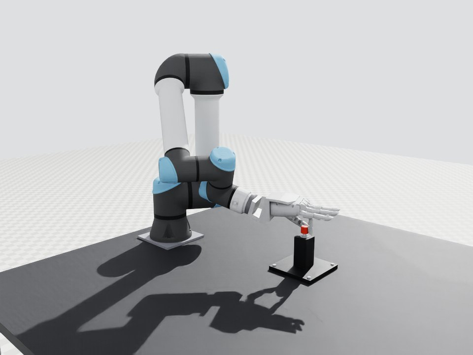
The same ten tasks in Isaac Sim (PhysX), from the same task, method and controller code; stills from the test episodes.
50 Hz Eddie commands tracked by a 1 kHz compliant controller; both gates online
Cube stacking, nominalEight Eddies: reach:cube_above, reach:cube_grasp, grasp, lift, transport, place, release, retreat. 50 of 50 runs stack the cube.
Full clipPerturbation and certified stopThe cube is pushed out of the safe set; the reach Eddie refuses its next command and the arm holds until the cube is back.
Full clipRobot camera, RGB feedDetected cube boxes and the target of the active Eddie, as the gate sees them.
Full clipCube moved to a second targetA stick moves the cube before the run: no reach command is issued while it moves, then the whole stream runs and stacks it.
Full clipHow an Eddie is built, how Streamer chains them, the gate on all ten tasks, transfer across robots and engines, and the real-robot runs
Supplementary videoThe method and all experiments in one clip, silent.
Full clipOverlays name the running Eddie and show the gate's check. Simulation clips are test episodes at normal speed.
Explore the project
Read the method, inspect the implementation, and download the episodes behind every certificate.